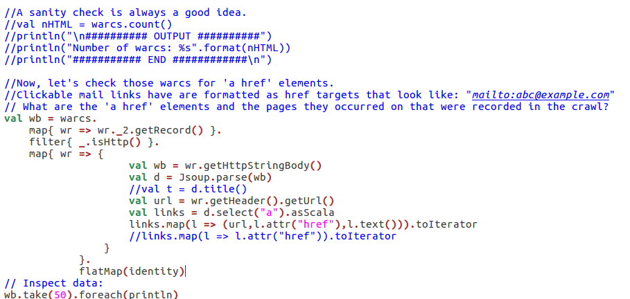

Joris Reichert
Final Project
Blog #6 for the Big Data course.
Introduction
Welcome to my sixth and final blogpost in the Big Data series. This blog is not like any of the others: for this final assignment I am to do a project to get hands-on experience in running and debugging jobs and working on large amounts of unstructured data. Now that may not sound very different from my previous blogposts, but the nuance lies in the word large. Large no longer means the entire works of Shakespeare, but now it refers to the entire Commoncrawl webcrawl! The project also differs from the way of work so far, as I am to
- Run Spark code standalone, outside the notebook interface;
- Scale up our workload in multiple steps, to tackle the issues that I encounter one by one.
The code produced can be found on this github page, the assignments I followed can be found under P: Final project, parts I through III: here.
Instructions part 1: WARC files in Spark
Preliminaries
Sadly, it is time to retire our old and trusty docker image that we have been using in blogs 3 through 5. We're provided with something new, obtained and started by running:
sudo docker pull rubigdata/course:project
sudo docker create --name cc -it -p 8080:8080 -p 9001:9001 -p 4040:4040 rubigdata/course:project
sudo docker start cchttp://localhost:9001/.
Managing WARC files
To analyse how we can obtain data from WARC files we will look at the following piece of example code:
// What are the text content-type records that were recorded in the crawl?
val wh = warcs.
map{ wr => wr._2.getRecord() }.
filter{ _.isHttp() }.
map{ wr => (wr.getHeader().getUrl(),wr.getHttpHeaders().get("Content-Type")) }.
filter{
case(k,v) => v match {
case null => false
case _ => v.startsWith("text") }
}
wh.take(20).foreach{ println }The first mapper is required to obtain the records of all warcs. Those records can still include records that contain images. We don't like images as they are harder to analyse, so we can use the filter function to check if the record is a HTTP (text) record.
The second mapper creates a tuple. The left half of the tuple opens the WARC header and obtains the URL from it. The right half of the header opens the HTTP header to obtain the content type from it.
The second filter filters out any tuples we created of which the content type (right side) does not start with the text "text". It seems like the only content-types are text/html; charset=utf-8, text/css; charset=utf-8 and null. The last of those is filtered out, presumably those are HTTP requests as their content type is null and leaves us with only the HTTP responses.
Parsing HTML
Once we have the HTML body (obtained by mapping .getHttpStringBody() on our warc records) we can use Jsoup to parse the HTML. Note that using "clean Jsoup code" with def can give Spark problems, which is most easy to work around by "inlining" more of your processing. Usefull references are the Jsoup website and this blogpost, the latter of which has some examples of using Jsoup in plain scala.
Here is some example code which creates and prints an RDD with tuples of the title of a page and each link on that page (the href destination of each a element in the page).
import org.jsoup.Jsoup
import org.jsoup.nodes.{Document,Element}
import collection.JavaConverters._
val wb = warcs.map{ wr => wr._2.getRecord().getHttpStringBody()}.
map{ wb => {
val d = Jsoup.parse(wb)
val t = d.title()
val links = d.select("a").asScala
links.map(l => (t,l.attr("href"))).toIterator
}
}.
flatMap(identity)
// Inspect data:
wb.take(50).foreach(println)
We could slightly alter the links.map(...) line to also add the anchor text to the tuple.
links.map(l => (t,l.attr("href"),l.text())).toIterator(Course Information,assignments/A1-preliminaries.html,A1) (Course Information,assignments/A1-preliminaries.html,Blogging assignment)Both "A1" and "Blogging assignment" are used to describe the hyperlink. As we know, the page is indeed a blogging assignment and we also have referred to it as "A1" (short for "Assignment 1").
Instructions part 2: Standalone Program
So far we have used Spark inside Zeppelin Notebooks, in a very user-friendly and interactive setting. As the concept of interactive notebooks does not work well with the concept of a cluster shared by many people, we want to convert our Zeppelin Notebook to a standalone application that we can run on the cluster.
While our container (cc) is still running, we can use sudo docker exec -it cc /bin/bash to obtain a shell inside our docker container. In this container we navigate to a folder called rubigdata that I've also added to my github. Inside, we find the two inputs required to build a trivial sample app. The scala code is found in RUBigDataApp.scala and the information on how it can be built into a self-contained app can be found in build.sbt. The target subfolder contains the standalone app that we created, which can be executed by running:
spark-submit target/scala-2.12/rubigdataapp_2.12-1.0.jarWe are provided with some commands to make a fat jar (a java archive that includes all its dependencies) of the sample app. How this all works when you have a cluster to work with will be discussed in Instructions part 3. After that, we will write our own small app, build it, deploy it to the cluster and reason about the results.
Instructions part 3: Cluster REDBAD
On to bigger and better things: the educational REDBAD cluster. We have to establish a vpn connection to the university to use this cluster. Configuring it wasn't too hard. For personal future reference: we can start it from our user directory using sudo openvpn openvpn-ca-science.ovpn.
The cc docker container was short lived as we again have to use a new container for working with the cluster. We will keep it up for now though, as viewing through and working in the notebook might prove usefull along the line. First, we set up our github username in an environment variable and then we create and start the docker container.
export GITHUB_USERNAME="jorisreichert"
sudo docker create --name redbad -e HADOOP_USER_NAME=${GITHUB_USERNAME} -it rubigdata/redbad
sudo docker start redbad
docker attach redbad.
As with many parts of this course, we are again provided with a beautifully well-prepared docker environment. I suppose it makes sense as I imagine there will only be need for a few people setting up clusters while we are being taught how to use those environments. Anyway, let's get started with running our example program on the cluster.
hdfs dfs -put rubigdata-test.txt /user/${HADOOP_USER_NAME}
hdfs dfs -ls /user/${HADOOP_USER_NAME}nano src/main/scala/org/rubigdata/RUBigDataApp.scala val fnm = s"hdfs:///user/jorisreichert/rubigdata-test.txt"hdfs:///single-warc-segment.
After our adaptation we can build and submit our program very similarly to what we've done in Part 2.
sbt assembly
spark-submit --deploy-mode cluster --queue default target/scala-2.12/RUBigDataApp-assembly-1.0.jarPart 4: scraping some mailaddresses
Now, after having learned how we can deploy a basic scala program to the cluster, it's time for some real work. Now, what kind of program would be useful?
Some time ago I was part of a workgroup that attempted to improve the mental wellbeing of students by searching some students that were willing to aid and meet up with any students that had difficulties in life without really knowing who to talk to. For this project we set up a webpage so people could get in touch with the 'aiding students'. After some time however, all the 'aiding students' got a huge influx in spam email. We suspected their mailaddresses had been scraped from the website, which got me interested in trying this on the webcrawl. If all goes well we might be able to expand in any of the following ways:
- Rank occurring email addresses by domain name
- Compare usage of 'own-domain' email addresses within a domain to more generic email providers (e.g. compare the occurrence of @ru.nl and @gmail.com within the webpages of the ru domain)
- calculate the maximum and average amount of email addresses on webpages
So, we've wrote some scala code. We put it in the same folder as our RUBigDataApp.scala our hdfs by using / pasting it in nano. In order to build it, we've changed the first line of build.sbt from name := "RUBigDataApp" to name := "GimmeDemMails" and hope this works.
Version 1: Opening a WARC file on the cluster and counting the warc records.
In GimmeDemMails.scala we wrote the following base program that we will improve on iteratively. It's in image format partly to disencourage plagiarism and partly because of readability provided by nano's colouring.

The program was compiled and submitted to the cluster. The output can be found here.
Version 2: Taking some a href targets with context
Next we cleverly combine the code we used in part one to make a triple of (website the link occurred on, the target of the href, the text used to describe the link). Of course we commented out the sanity check.  Sidenote on the workflow explaining the change of editor: As working with nano became tedious I used gedit from here onwards and just pasted all the code in the nano editor. Small compilation errors were then fixed in nano.
This program was also compiled and submitted to the cluster. The output can be found here.
Version 3: Filtering for email addresses
Directly following on flatMap(identity) I added:
.
filter{case (u,a,t) => a matches "$@%.$"}This filter with a regex should filter out all triples of which the link does not point to a mail address. This program was also compiled and submitted to the cluster. This job however gave some more 'interesting' results. The output is empty...
Our regex seems to be fine when tested against a few examples however, so this would lead us to assume this WARC file did not include any pages that had a clickable mail link like a href = "mailto:abc@example.com". The next step would be to either check the entire body of webpages or to check more than one warc file at a time.